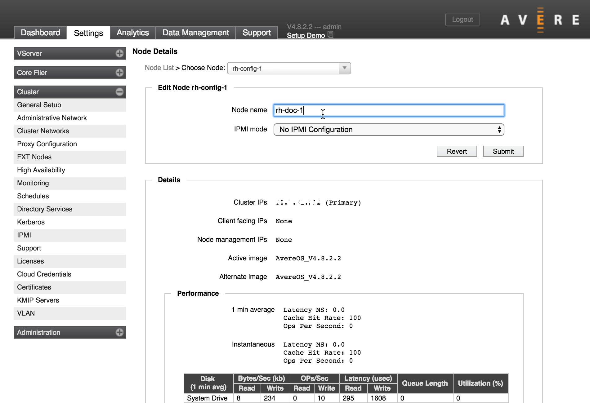
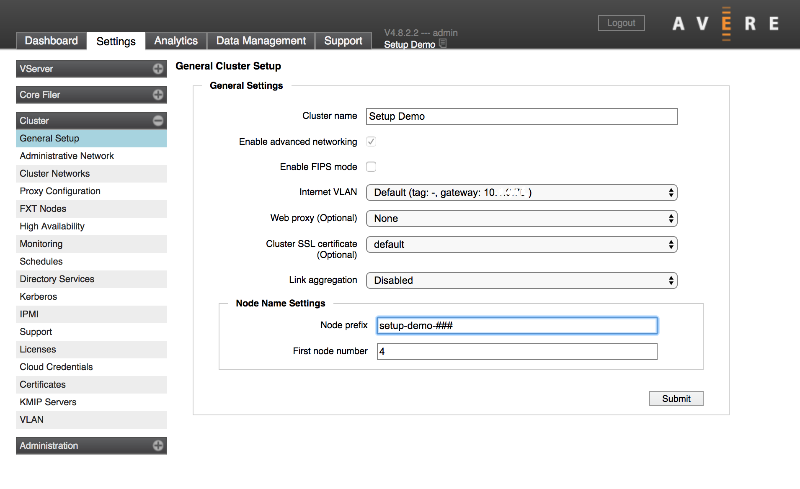
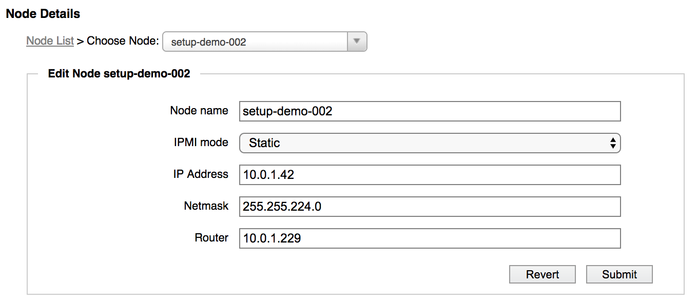
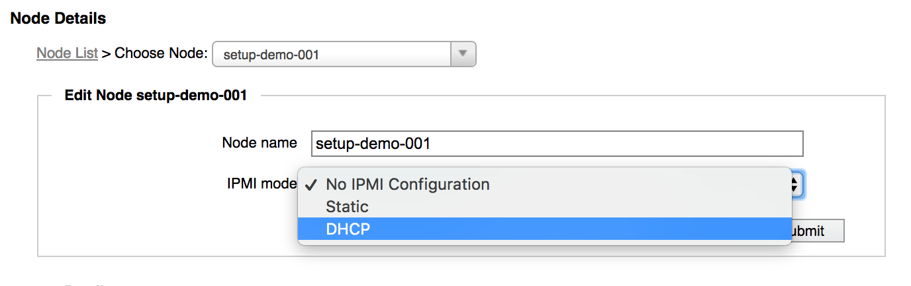
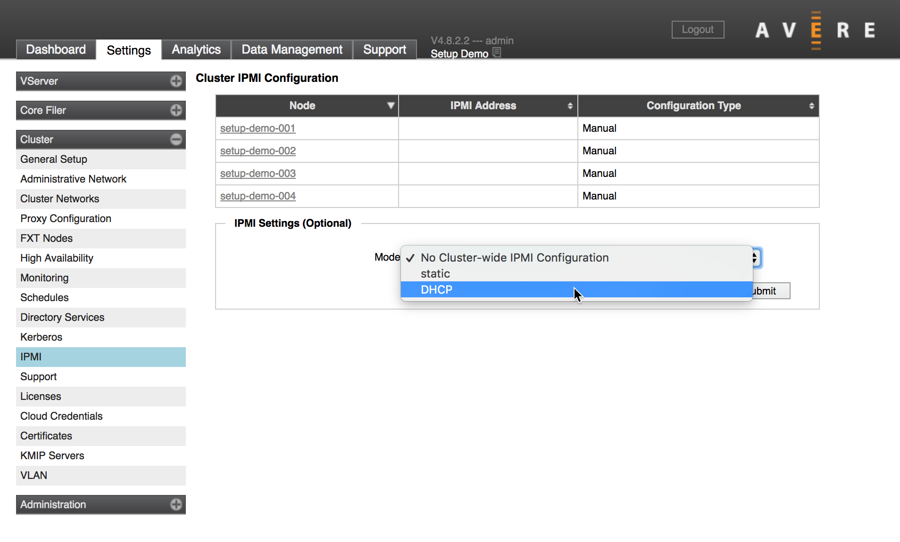

Customizing Node Settings¶
There are some node-related settings that you should consider customizing as part of your initial Avere cluster setup:
- Node name - The label that the cluster uses for the node
- IPMI port address - How the node’s IPMI port gets its IP address
Both of these settings can be made for individual nodes, or at the cluster level.
Tip
If you want to set either of these values at the cluster level, consider doing it before adding nodes to the cluster. Newly added nodes automatically pick up the cluster-level settings.
To set these items at the individual node level, use the Node Details settings page. This page does not appear in the Avere Control Panel’s navigation sidebar; load the page by clicking the node name in the list on the FXT Nodes page or on the IPMI settings page.
(The Node Details page also shows configuration information and statistics for the selected node. For more information about the node details page, read Node Details in the Cluster Configuration Guide.)
To set node names at the cluster level, use the Cluster > General Setup page.
To set IPMI address method at the cluster level, use the Cluster > IPMI settings page.
Node Name Configuration¶
Set an individual node name on its Node Details page, or set a naming schema for the cluster on the Cluster > General Setup page.
Set A Single Node Name¶
You can change the name of a single node by editing the Node name field.
Load the node details page by clicking on a node name in the list on the FXT Nodes settings page or on the IPMI settings page.
{kind=link}
After updating the node name, click Submit to save your changes.
Set the Cluster-Wide Node Naming Scheme¶
You can set a default name for all nodes that join the cluster in the future by using the Cluster > General Setup page.
{kind=link}
New nodes will be automatically named with the base name that you set and the next available number.
This setting does not affect nodes that joined the cluster before the change.
Use the Node prefix field to enter the base name for new nodes. Optionally, you can configure the number of digits in the node number by using the placeholder value # - for example, specifying ### in the Node prefix field will give a three-digit node number for each node that uses this naming scheme. The default value is two digits.
You can set the starting node number for automatic assignment in the First node number field.
For more detailed information about this setting, read Cluster > General Setup in the Cluster Configuration Guide.
IPMI Configuration¶
Each FXT node has an Intelligent Platform Management Interface (IPMI) port, which provides access to the FXT node hardware for emergency troubleshooting.
As part of your cluster setup, you should configure how the nodes’ IPMI ports get their IP addresses. Choose from the following options:
No configuration
Static - Manually set the IP address
Read Setting a Static IPMI Port Address for detailed information about this option.
DHCP - Obtain an IP address from a DHCP server
By default, IPMI ports come configured to use DHCP. If you choose No configuration, each node will either obtain its IPMI address by using DHCP, or use whatever configuration was last set for this node’s port.
Note
The IPMI port allows access to the FXT node’s hardware directly, bypassing the security built in to the Avere operating system. Protect this port from unauthorized use by connecting it to a secure network, ensuring that the IPMI administrator password is changed from the default value, and securing the DHCP environment if you use DHCP to assign IP addresses. Avere recommends using physically separated networks for IPMI ports and data ports.
Like node names, IPMI mode can be set at the cluster level or at the individual node level. Use the links below to jump to the options:
Setting a Static IPMI Port Address¶
If using a static IP address for one or more nodes in the cluster, you must provide the IP address and other information.
{kind=link}
Provide the following information:
IP address - The address to set for the node’s IPMI port
On the cluster IPMI configuration form, this section asks for the first and last IP address instead of a single address. Use these fields to provide a range of IP addresses for the cluster nodes’ IPMI ports.
- Netmask - The netmask for the IPMI addresses
- Router - The router that the IPMI connections should use
Enter the netmask and router for the network that serves your IPMI ports. For security, Avere Systems recommends using physically separated Ethernet networks for IPMI ports and for data services.
Configure IPMI for One Node¶
Use the Node Details page to set how an individual FXT node’s IPMI port gets its IP address.
(To open the node details page, click a node name in either the FXT Nodes or IPMI settings page.)
{kind=link}
The configuration options are described in more detail in IPMI Configuration, above.
Configure IPMI for the Avere cluster¶
Configure how all of the cluster’s IPMI ports get their addresses by using the Cluster > IPMI settings page.
Note
Setting a cluster-wide configuration option overwrites any options that you have set for individual nodes. To customize individual nodes, set their IPMI addresses from the node details page after changing the cluster setting.
The IPMI page shows the addresses currently assigned to each node, and the Configuration Type column shows whether the node gets its address from the cluster-wide setting (Cluster) or from the individual setting (Manual).
{kind=link}
The configuration options are described in more detail in IPMI Configuration, above.
Note that if you want to set static IP addresses at the cluster level, you will need to supply a contiguous range of IP addresses that is large enough to provide a unique address to each node.